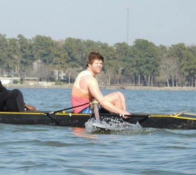

WELCOME TO MY WEBSITE

Hello, my name is Thomas MacEwen, but I go by Tommy.
I am 30 years old now, which has been hard to get over, but age is just a number. But if you start to look old, well that’s more than just a number. I grew up in Delaware and I have one sister that is older than me. I did swim team in the summer and ice hockey during the year for most of my life. I had some family situations that led to me dropping out of highschool in 9th grade, but I still ended up finishing on time as I began to feel better. I attended Libery University in Lynchburg VA for 3 years, however, I was so lost in what I wanted to do and unhappy with life that I did not end up graduating. I worked at other jobs that were not too great, like Amazon and UPS, which finally motivated me to finish school.
I moved to NC about 6 years ago with my Mother from Delaware, with plans of finishing school. Delaware was pretty small compared to Raleigh, but I definitely like it. I had a bit of a rough time adjusting though, but I am doing pretty well now. I like to get out and run and swim, and will probably try to join some running groups/sports leagues this summer.
There is only so much you can get to know about someone without talking to them in person, but I will do my best to introduce myself on this website!